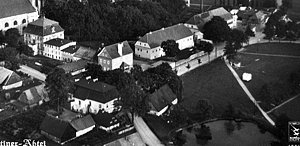

|
Widok z wieży kościelnej. Po lewej stronie widać ulicę powszechnie nazywaną "Obergas", po prawej drogę do Chełmska Śląskiego. W miejscu gdzie dzisiaj jest hurtownia budowlana "Pagaz" widać łąkę. Tak samo w przypadku bazy SKR i stacji paliw. Za to kościół ewangelicki nie jest ruiną jak dziś. Nie ma też dziś budynków stojących tuż za murem kościelnym. |
|
Widok z drugiej wieży kościelnej w dokładnie odwrotną stronę. Kościół św. Józefa widoczny częściowo z lewej strony przykryty jest dachówką (dziś blachą miedzianą). Kontrastem do stanu dzisiejszego jest budynek stojący po prawej stronie drogi do Kamiennej Góry, w tym miejscu dzisiaj jest bodajże plac zabaw. |
|
Kolejny widok z wieży kościelnej, tym razem w stronę dzisiejszego sklepu GS. |
 |
Krzeszów z lotu ptaka. |
|
Tutaj również Krzeszów z lotu ptaka, brak jednej wieży kościelnej. |
|  |
Z tego zdjęcia widać, że pierwsza stacja Drogi Krzyżowej pierwotnie stała w innej lokalizacji niż dziś. |


{kind=link}
{kind=link}
{kind=link}
{kind=link}